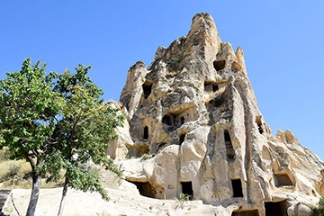
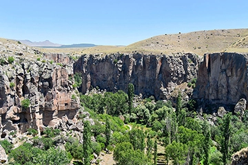
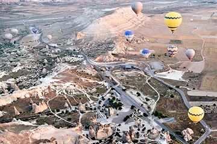

Explore Cappadocia 2022
Choose your toursDiscover Cappadocia by travel itineraries created by local guides
Travel to Turkey and break away from the bustle of the big cities to experience the rural culture of the Cappadocia region. A series of volcanic eruptions resulted in the area being swamped in ash, which then hardened to form a porous rock. The elements carved the terrain into the odd fairy chimneys, and later the inhabitants discovered they too could carve the rocks into homes and churches. A base in Goreme allows you to easily explore Cappadocia with a local guide, so come and discover Cappadocia's many mysteries and legends.
Guided Tours
At Cappadocia Tours, we offer guided tours to the region. Our super tours are designed and escorted by local guides. You will be able to visit lots of exciting places, iconic sites, famous landmarks and discover lesser-known hidden gems. Reservations are now available for 2022.
Private Red Tour
On this full-day guided tour, see all the highlights of Cappadocia in just one day. Hear commentary from your guide along the way about fascinating sites like Goreme Open-Air Museum, cave churches, Uchisar Castle, and Kaymakli Underground City, and stop for lunch and wine tasting. A customizable itinerary and hotel pickup make for a convenient, flexible experience.
What's Included
- Private A/C luxurious minivan on tour
- Private English Speaking guiding
- Lunch on tour
- All admission fees to the sites and museums
- Local taxes & 18 % VAT
- Entry - Goreme National Park
- Entry - Zelve Open Air Museum
Private Green Tour
See more of Cappadocia on a full-day tour that visits both historical and natural attractions. Check out the views from Göreme Panorama and Yaprakhisar Panorama, enter the subterranean chambers of Derinkuyu Underground City, and see ancient rock-cut churches at Selime Monastery. Also, take a leisurely 1-hour walk through the scenic Ihlara Valley, and check out Pigeon Valley. Includes lunch, entrance fees, and hotel pickup and drop-off.
What's Included
- Private A/C luxurious minivan on tour
- Private English Speaking guiding
- Lunch on tour
- All admission fees to the sites and museums
- Local taxes & 18 % VAT
- Entry - Kaymakli Underground City
- Entry - Ihlara Valley
- Entry - Saruhan Exhibition & Culture Center
- Entry - Selime Monastery
Hot Air Balloon Tour
Overview Savor views of the spectacular Göreme Valley in Cappadocia from the air with this scenic hot air balloon experience. Set off at sunrise and drift over the “fairy chimney” rock formations and Bronze Age cave dwellings that have made the Cappadocia landscape so famous. Snap photos of the bird’s-eye views as you let the wind set your course and end your adventure with a champagne toast.
What's Included
- Transport by air-conditioned minivan
- Hotel pickup and drop-off
- Enjoy open Buffet Breakfast at authentic restaurant
- Glass of Champagne
- Commentary by pilot
- Commemorative Flight Certificate
- Breakfast
- Coffee and/or Tea